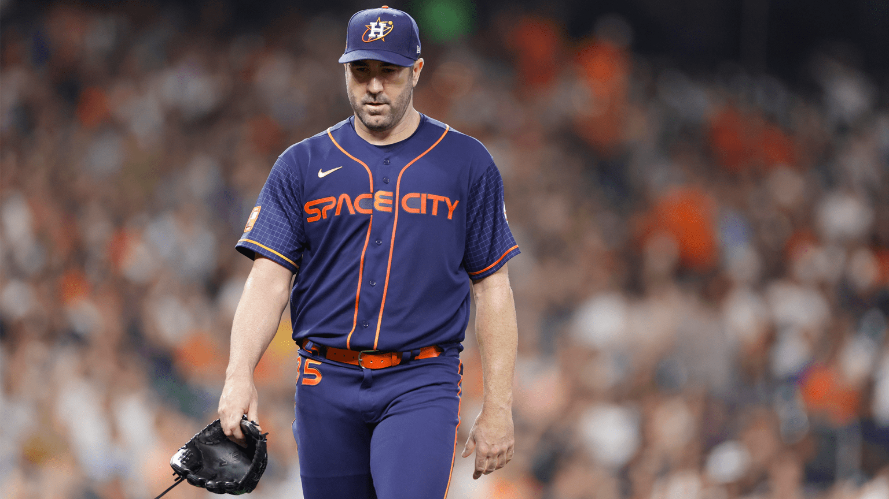
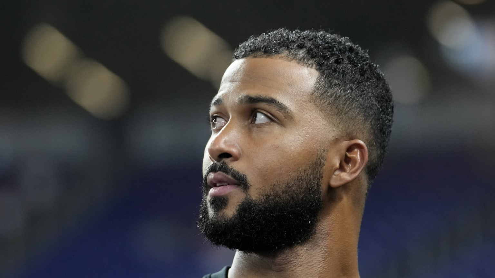

Justin Verlander abrirá el Juego 1 de la SDLA por los Astros. HOUSTON -- El derecho veterano Justin Verlander abrirá el Juego 1 de la Serie Divisional de la Liga Americana por los Astros el sábado a las 3:45 hora Central en el Minute Maid Park, donde los Astros han ganado 11 juegos consecutivos de SDLA desde el 2017. Será la 35ta

Alcántara se sometió a la cirugía Tommy John; se perderá el 2024. El dominicano de los Marlins, Sandy Alcántara, anunció el viernes a través de su redes sociales que se sometió a la cirugía Tommy John en su codo derecho, y que se perderá toda la temporada del 2024. “Con gran pesar, quiero que todos sepan que me sometí a una cirugía